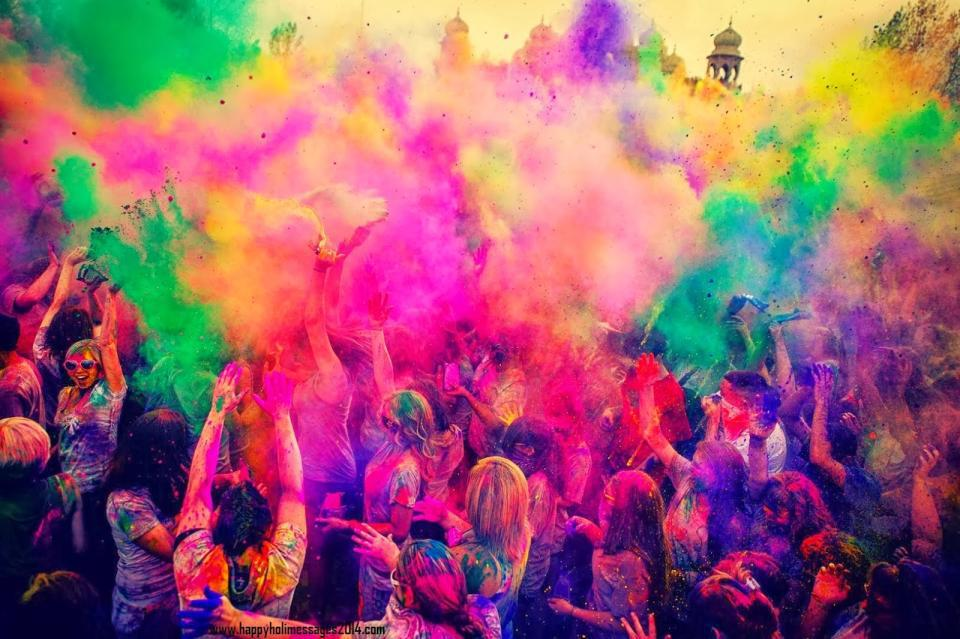
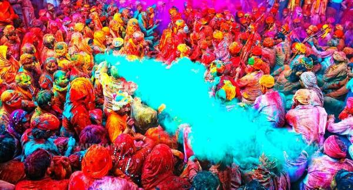

Découvrir l'Inde c'est vivre un choc total des cultures, voir se côtoyer abondance
et manque à quelques rues d'écart. Un voyage d'une rare intensité qui ne laissent
personnes indiférent.
Lors d'un séjour dans le pays, vous aurez également l'opportunité de voir de nombreux
rituels,l'Hindouismes ayant conservé un très fort immpact sur la vie quotidienne des
indiens, sur l'art et sur l'architecture. Des fêtes merveilleuses pourront notamment
rythmer votre séjour.
Pour profiter pleinement votre séjour en Inde, partez entre MI-NOVEMBRE et FIN-MARS,
il s'agit d'une période appelée automne indien. Durant ces quatres mois et demi, Vous
profiterez d'un climat doux et tempéré et éviterez les périodes de mousson qui
empêchent certaines visites.
Calendrier des fêtes en Inde
>L'Inde est une "terre de fête".Ces fêtes et jour fériés relèvent du calendrier lunaire Indien ou des autres calendriers.Par conséquent, leurs dates changent d'une année sur l'autre.Toutesfois,certaines fêtes sont fixes:
- 25 Décembre: NOEL
- 01 Janvier: JOUR DE L'AN
- 26 Janvier: JOUR DE LA REPUBLIQUE
- 11 Mai: BOUDHA PURNIMA
- 15 Août: JOUR DE L'INDEPENDANCE
- 4 Novembre: ANNIVERSAIRE DE GURU NANAK
La plupart des fêtes sont religieuses; elles seraient plus nombreuses que les les jours du calendrier et changent de date chaque année. Voici quelques uns qui aura lieu lors de votre séjour en Inde:
- NOUVEL AN TAMOUL: Janvier
- NOUVEL AN au KERALA: Avril
- HOLI(Fête des couleurs): Mars
- DUSSERAH(Fêtes des dieux): Septembre-Octobre
- DIWALI(Fête des lumières): Octobre-Novembre
Fête des couleurs en Inde
Fête du printemps de l'Amour et de la joie

En 2022, la grande fête d'Holi se déroulera du Jeudi 17 au Vendredi 18Mars 2022. Comme chaque année, les hindous célébreront le passage de l'hiver au printemps dans une profusion de couleurs.Pour le premier jour de la célébration appelé Holika Dahan, la première nuit sera marquée par un feu commémorant. Le jour suivant(Rangapanchami), les festivaliers vêtus de blanc défileront dans les rues en se jetant des pigments de couleurs.
Les couleurs
Chaque couleurs a une signification

La fête des couleurs, est certainement l'une des plus marquantes pour les visiteurs de passage.
.jpeg)